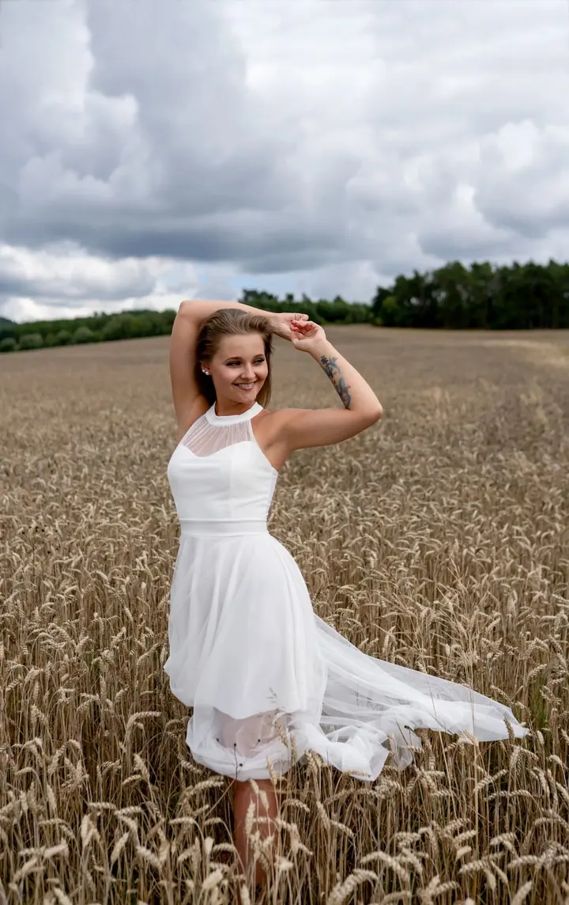
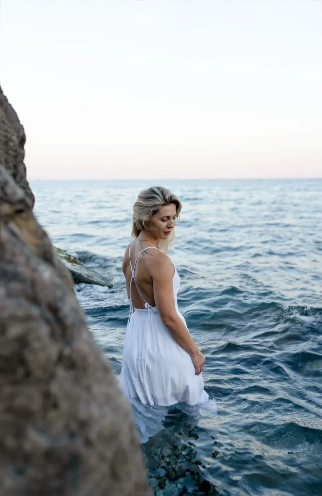
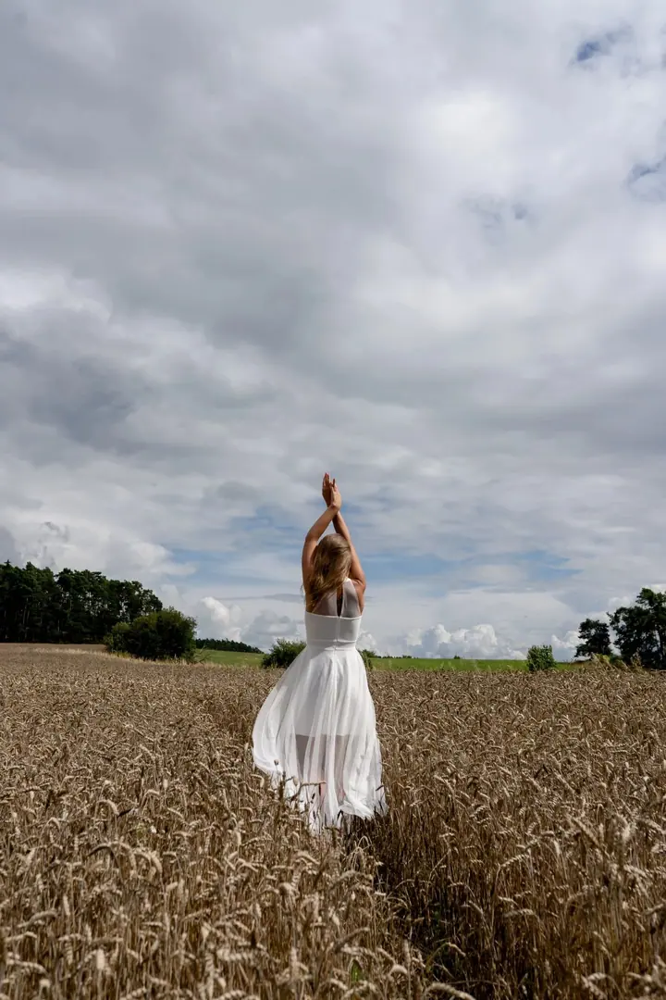
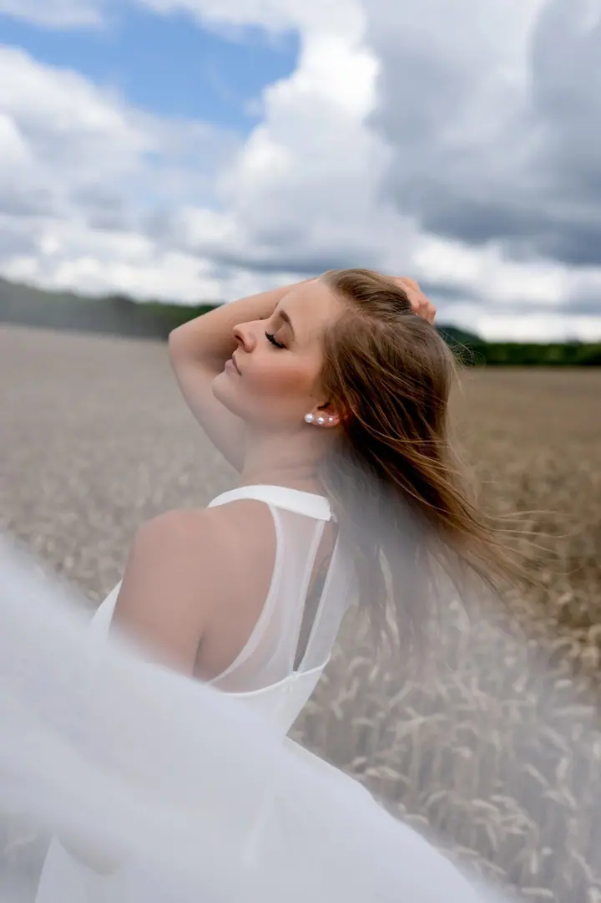
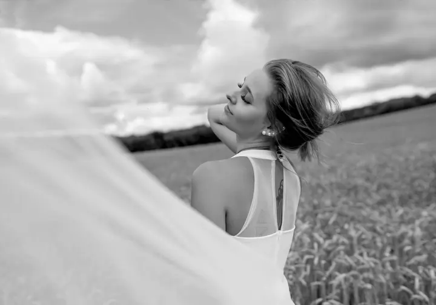

Focení pro ženy
Chvíle jen pro vás, při které objevíte svou krásu v novém světle. Nemusíte mít žádné zkušenosti, celým focením vás provedu a pomůžu s pózováním. Dostanete 10 upravených fotografií v plném rozlišení.





Jmenuji se Oksana Smola a fotím pod značkou Photo by Oxy. Zaměřuji se hlavně na rodiny, děti a miminka, ráda ale fotím i ženy, páry a těhotné maminky v přírodě. Se mnou zažijete uvolněné focení plné pohody, ať už v mém ateliéru ve Strakonicích, nebo venku pod širým nebem.
Více o mně„Největší odměnou jsou pro mě Vaše návraty.“
— Oksana Smola
Chvíle jen pro vás, při které objevíte svou krásu v novém světle. Nemusíte mít žádné zkušenosti, celým focením vás provedu a pomůžu s pózováním. Dostanete 10 upravených fotografií v plném rozlišení.
Na focení rodin a dětí se zaměřuji nejvíc. Fotíme v mém útulném ateliéru ve Strakonicích, kde je spousta rekvizit, nebo venku na místě, které máte rádi.
Fotím první dny vašeho miminka v klidu a bez spěchu. V ateliéru je teplo, pohodlí a vše potřebné, abyste se cítili jako doma.
Zachytím vaši krásu v těhotenství a čekání na miminko. Fotit můžeme v ateliéru, v přírodě, v Praze nebo netradičně u letadla na strakonickém letišti.
Ahoj, jsem Oxy. Fotím rodiny, děti a miminka, těhotné maminky, ženy, páry i svatby. Přátelský přístup je pro mě na prvním místě. Chci, abyste se u focení cítili dobře a nemuseli nic předvádět. Největší odměnou jsou pro mě vaše návraty.
Můj útulný fotoateliér najdete v centru Strakonic, v Relaxačním centru Ostrov. Je tam spousta rekvizit a příjemná atmosféra, takže se budete cítit jako doma. Fotím jen na objednávku, abych se vám mohla v klidu věnovat, a čas si udělám i v neděli nebo o svátcích.
Ráda fotím i venku: v obilí, u vody, v ulicích Prahy, v Plzni nebo u letadla na strakonickém letišti. Nemusíte umět pózovat. Stačí přijít takoví, jací jste, a já vás celým focením citlivě provedu. Fotit můžeme česky i anglicky.
Napište mi na e-mail nebo zavolejte, stačí i SMS a co nejdříve se vám ozvu. Termíny rezervuji 1 až 2 týdny dopředu.
Společně vybereme místo, styling i oblečení. Na některá focení si můžete zapůjčit šaty a přiobjednat vizážistku přímo v ateliéru.
Fotíme v klidu a v pohodové atmosféře, s pózováním vám pomůžu. Když venku nepřeje počasí, domluvíme nejbližší náhradní termín.
Upravené fotografie dostanete v plném rozlišení v elektronické podobě, u svateb na USB disku v dárkové krabičce.
Vůbec ne. Celým focením vás provedu a pomůžu vám s pózováním, abyste se cítili uvolněně a mohli být sami sebou.
V mém ateliéru v Relaxačním centru Ostrov ve Strakonicích, v přírodě, na vašem oblíbeném místě nebo v Praze. Focení s letadlem probíhá na letišti ve Strakonicích.
Pokud by v exteriéru nešlo fotit kvůli počasí nebo nemoci, domluvíme se na nejbližším možném termínu.
Ano, nabízím dárkové poukazy. U focení s letadlem vám poukaz připravím v elektronické i tištěné podobě.